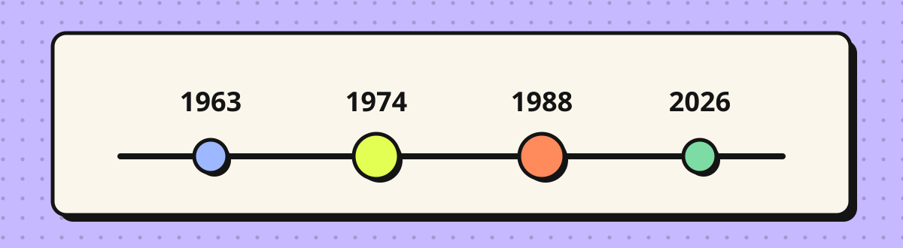
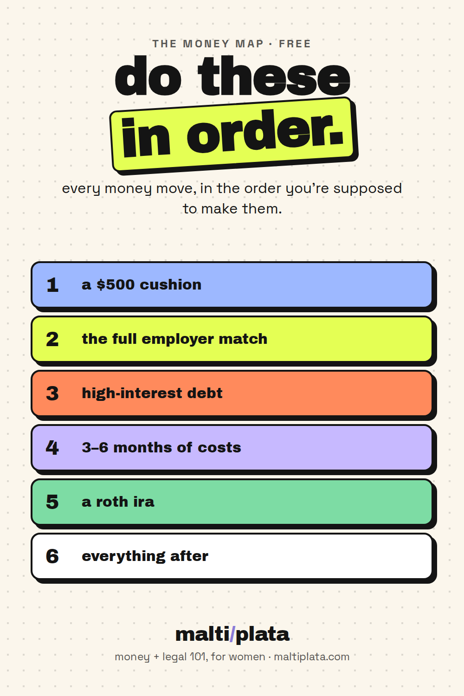

1993
the rock
lynn hill free climbs the nose
The 3,000-foot Nose of El Capitan had never been free climbed by anyone. Hill did it first — not the first woman, the first person.
The detail: her comment afterward was three words. "It goes, boys."
home → herstory → women who went first
Not "firsts" as a trivia category. These are women who walked into rooms, routes, and record books that had never held one — and the detail underneath each is usually better than the headline. Read a few. Send one to someone.

1993
the rock
lynn hill free climbs the nose
The 3,000-foot Nose of El Capitan had never been free climbed by anyone. Hill did it first — not the first woman, the first person.
The detail: her comment afterward was three words. "It goes, boys."
1990
the rock
the route no woman would ever climb
Masse Critique in Cimaï, France was 5.14a — world-class at the time. Its first ascensionist had said publicly that no woman would ever climb it.
The detail: Hill sent it in fewer tries than he had — and no other woman reached that grade for three more years.
1975
the rock
junko tabei summits everest
First woman on top of Everest, leading an all-women expedition from Japan. In 1992 she became the first woman to complete the Seven Summits.
The detail: an avalanche buried her team's camp and knocked her unconscious. She summited twelve days later. Her club had been so short of funding they sewed their own waterproof gear from recycled materials.
2011
the rock
gerlinde kaltenbrunner finishes all fourteen
First woman to climb all fourteen of the world's 8,000-meter peaks — every one of them without supplemental oxygen.
The detail: no bottled oxygen means climbing the "death zone" on lungs alone, where the air holds about a third of the oxygen at sea level.
1921
the sky
bessie coleman gets her license in france
No American flight school would admit her — she was Black, Native American, and a woman. So she learned French, moved to France, and earned an international pilot's license there.
The detail: she came home a stunt flier famous for loop-the-loops, and refused to perform anywhere that segregated its audience.
1978
the sea
krystyna chojnowska-liskiewicz sails around the world alone
First woman to complete a solo circumnavigation — roughly 28,700 nautical miles, alone, on a 32-foot yacht.
The detail: she was a naval engineer by trade, and the boat she crossed the planet in was designed by her husband at the Gdańsk shipyard.
1963
the sky
valentina tereshkova orbits earth 48 times
First woman in space, aboard Vostok 6 — twenty years before the first American woman flew.
The detail: she was a textile factory worker and amateur parachutist when she was selected.
1955
on foot
grandma gatewood walks the appalachian trail
Emma Gatewood became the first woman to hike the entire Appalachian Trail solo in a single season. She was 67.
The detail: she told her family she was going for a walk. She carried a homemade sack and wore Keds.
1967
the money
muriel siebert buys a seat on the nyse
The first woman among 1,365 men on the floor of the New York Stock Exchange. Before her, women were allowed there as clerks and pages — and mostly only during wartime staff shortages.
The detail: nine men refused to sponsor her before the tenth agreed. Then the NYSE invented a new rule just for her: $300,000 of the $445,000 seat price had to be bank-guaranteed — but no bank would lend to a woman without the seat. It took two years to break the loop.
1972
the money
katharine graham runs a fortune 500 company
First woman to lead a Fortune 500 company, at The Washington Post — and the one who backed the Watergate reporting that ended a presidency.
The detail: she took the job in 1963 after her husband's death, having never held a full-time job. She ran it until 1991.
1977
the money
siebert regulates every bank in new york
Ten years after buying her seat, she became New York's first woman Superintendent of Banks, overseeing institutions holding roughly $500 billion.
The detail: she served through a stretch of steep rates and widespread bank failures. Not one bank failed on her watch.
1869
the record
arabella mansfield is admitted to the bar
First woman admitted to practice law in the United States, in Iowa — at a moment when the state's statute said the bar was for white males over 21.
The detail: she passed the exam with high scores, and the court read the statute's wording as permissive rather than exclusive.
1877
the record
helen magill earns the first ph.d.
First American woman to earn a Ph.D., at Boston University — in Greek.
The detail: it was four years before a woman could vote anywhere in the country, and 43 years before she could vote nationally.
1916
the record
jeannette rankin is elected to congress
First woman elected to the U.S. Congress, from Montana.
The detail: she was elected four years before the Nineteenth Amendment gave women nationwide the right to vote. She could serve in Congress before most American women could vote for her.
1974
the money
women get credit in their own names
The Equal Credit Opportunity Act made it illegal to deny a woman a credit card, mortgage, or loan for being a woman. Before it, a bank could simply ask for a man's signature.
The detail: the congresswoman who drove it, Margaret Heckler, had arrived in Congress in 1967 as a lawyer and elected representative with no right to credit in her own name. the whole story →
1988
the money
business loans without a male relative
The Women's Business Ownership Act ended state laws requiring a woman to have a male relative co-sign her business loan.
The detail: at the hearings, one witness testified she had no husband, brother, or living father available — so her 17-year-old son signed for her. He couldn't vote. He could vouch for his mother's money.

pin this
every money move, in the order you're supposed to make them. save it, screenshot it, send it to whoever needs it.
download the pdf ↓Every one of these was, at the time, described as an exception. A stunt. A woman doing something women don't do. And then it was simply a thing that had been done, and the next person didn't have to argue about whether it was possible.
That's the useful part. Not inspiration — evidence. The ceiling was never structural. It was a rule someone wrote down, and rules get rewritten by whoever shows up and does the thing anyway.
see the full timeline →Sources: National Geographic and the American Alpine Club (Lynn Hill, Masse Critique, the Nose) · Women in Exploration and Global Traveler (Junko Tabei, Bessie Coleman, Grandma Gatewood) · Culture.pl and Wikipedia (Krystyna Chojnowska-Liskiewicz) · Museum of American Finance via Forbes, NPR, and NBC News (Muriel Siebert) · CNN's Breakthrough Women Fast Facts (Graham, Mansfield, Magill, Rankin) · Congress.gov and the National Archives (ECOA 1974, H.R. 5050). Dates for climbing grades occasionally differ by a year across sources; we used the earliest well-documented date.